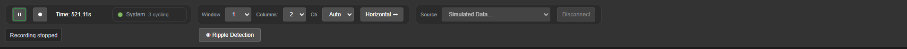
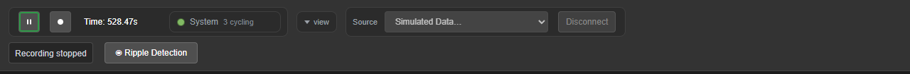
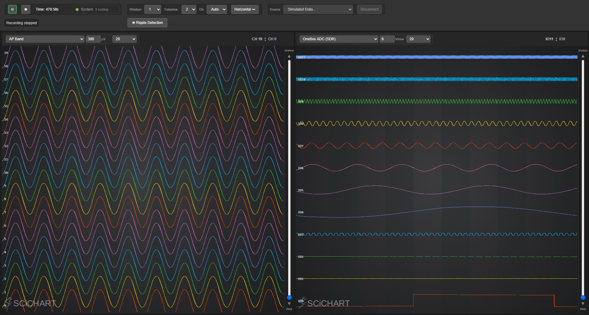
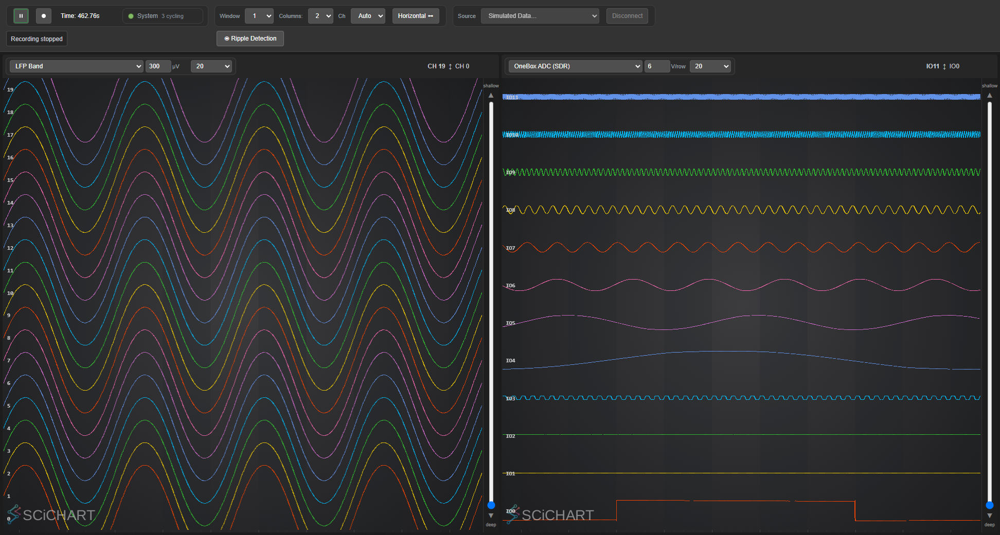
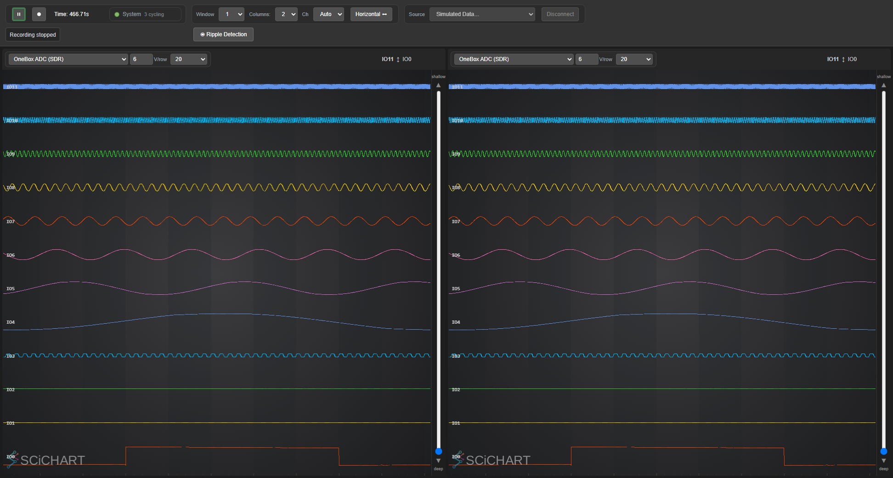
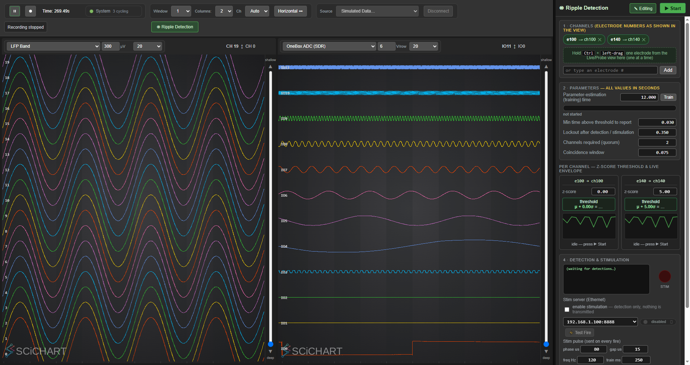
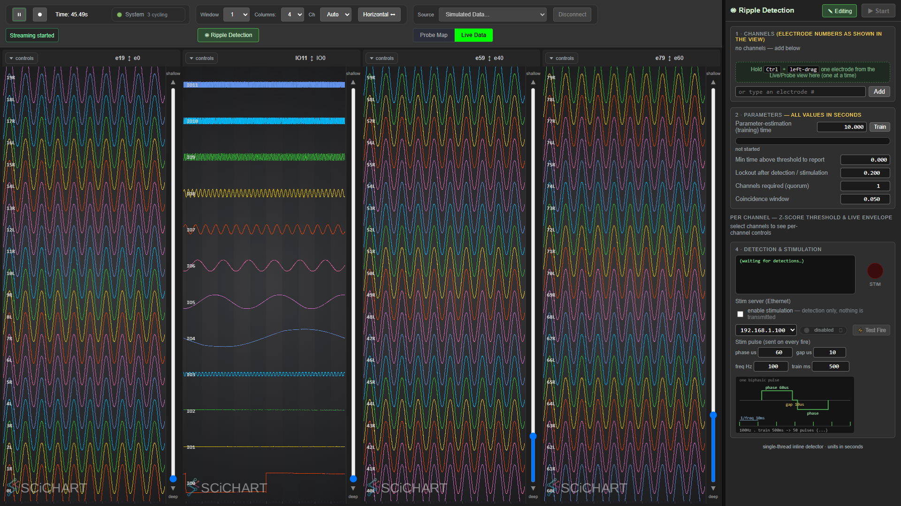
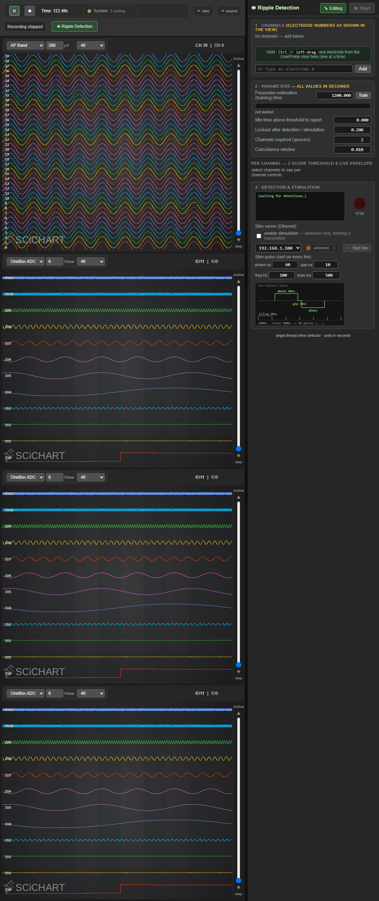

GUI test coverage — what is checked, and what is not#
The GUI is a unit and it gets tested. This page is the inventory: every aspect currently covered, the behaviour the tests recorded, and — kept deliberately prominent — the aspects that are not covered yet, so nobody mistakes a green run for complete coverage.
Run them:
python scripts/run_gui_tests.py
Mechanics, conventions and how to add a test live in Testing.md §3. This page is the
coverage itself.
1. The suites#
| Suite | Covers | Combinations |
|---|---|---|
layout_matrix |
Columns × ripple dock × orientation; fold rules, toolbar rows, depth readout, render | 16 |
stream_options |
Every stream option on every sim source × 2 columns; units, labels, depth, independence | 8 |
ripple_params |
Every editable ripple/stim parameter, GUI → backend round trip | 10 |
toolbar_layout |
Toolbar folding across viewport widths; nothing lost, never >2 rows | 15 widths |
live_view |
Traces render, streams labelled, strips collapse/pin, pin survives rebuild, vertical | ~20 checks |
All drive a real browser over CDP against a real backend on a simulated source. No hardware.
Every suite writes its own screenshots into developer_docs/images/gui/ as it runs, so the images on
this page are produced by the same run that made the assertions — they cannot drift from the
behaviour being claimed. Only the frames embedded below are tracked in git; the rest (all 16
matrix cells, the 820px toolbar, the live-view frames) are regenerated by any run of
python scripts/run_gui_tests.py, and are gitignored so a run does not add ~14 MB of churn.
| suite | frames |
|---|---|
layout_matrix |
matrix_<axis>_<n>col_dock<on\|off>.png — all 16 |
toolbar_layout |
toolbar_1920.png, toolbar_1280.png, toolbar_820.png (cropped to the bar) |
stream_options |
stream_ap_band.png, stream_lfp_band.png, stream_onebox_adc_sdr.png (no raw frame — see §4a) |
live_view |
live_2col.png, live_3col.png, live_vertical.png |
ripple_params |
ripple_dock_params.png |
The toolbar, folding#
| 1920 px — everything inline | 1280 px — view + source folded |
|---|---|
 |
 |
The bands#
| AP | LFP | OneBox ADC (SDR) |
|---|---|---|
 |
 |
 |
The ripple dock, after every parameter has been driven#

2. The layout matrix — 1–4 columns × dock × orientation#
The combinatorial case hand-testing misses. Every cell asserts: the requested column count exists, the toolbar never exceeds 2 rows, every column renders, the depth readout is never folded away, and any collapsed strip still has a visible reveal chip.
| axis | cols | dock | toolbar rows | strips collapsed | first canvas | dock width |
|---|---|---|---|---|---|---|
| horizontal | 1 | closed | 2 | 0/1 | 1903×884 | 0 |
| horizontal | 2 | closed | 2 | 0/2 | 934×884 | 0 |
| horizontal | 3 | closed | 2 | 3/3 | 610×894 | 0 |
| horizontal | 4 | closed | 2 | 4/4 | 449×894 | 0 |
| horizontal | 1 | open | 2 | 0/1 | 1523×884 | 381 |
| horizontal | 2 | open | 2 | 0/2 | 744×884 | 381 |
| horizontal | 3 | open | 2 | 3/3 | 484×894 | 381 |
| horizontal | 4 | open | 2 | 4/4 | 354×894 | 381 |
| vertical | 1 | closed | 2 | 0/1 | 1903×884 | 0 |
| vertical | 2 | closed | 2 | 0/2 | 1903×417 | 0 |
| vertical | 3 | closed | 2 | 0/3 | 1903×261 | 0 |
| vertical | 4 | closed | 2 | 0/4 | 1903×155 | 0 |
| vertical | 1 | open | 2 | 0/1 | 1523×884 | 381 |
| vertical | 2 | open | 2 | 0/2 | 1523×417 | 381 |
| vertical | 3 | open | 2 | 0/3 | 1523×233 | 381 |
| vertical | 4 | open | 2 | 0/4 | 1523×127 | 381 |
The fold rule, and why it is orientation-dependent#
ChartColumn.updateStripMode(): a strip collapses when (!vertical && nCols > 2) || doesNotFit.
The count-based half is horizontal-only, and the table above is why. A horizontal column at four across is 449 px wide — there, the control strip is the difference between a readable column and a cramped one. A vertical row is 1903 px wide no matter how many rows there are, so folding it reclaims width that was never scarce; the scarce axis in vertical mode is height, which the strip barely uses. Vertical therefore keeps its controls expanded, exactly as they appear at 1–2 rows.
doesNotFit still applies on both axes: a strip that genuinely cannot fit its header folds
regardless, because the alternative is a clipped control.
Horizontal, 4 columns, dock open — the tightest cell in the matrix:

Vertical, 4 rows, dock open — same content, strips expanded:

All sixteen frames are in developer_docs/images/gui/matrix_<axis>_<n>col_dock<on|off>.png, rewritten
by every run of the suite.
3. Stream options — the right view for the right band#
Every option in every column's stream selector, on both simulated sources, checked for unit, channel labels and depth readout. Selecting a band is the most-used control in the application and the easiest to get subtly wrong: the traces keep drawing while the labels or units belong to another band.
| source | options | unit | labels | depth |
|---|---|---|---|---|
| Simulated NPX 1.0 (OneBox) | AP Band |
µV | 39R 38L 37R |
e39 ↕ e0 |
LFP Band |
µV | 39R 38L 37R |
e39 ↕ e0 |
|
OneBox ADC (SDR) |
V/row | IO11 IO10 IO9 |
IO11 ↕ IO0 |
|
| Simulated NPX 2.0 Multishank | RAW Band |
µV | 39R 38L 37R |
e39 ↕ e0 |
Also asserted: the two columns are independent (driving one to the first option and the other to the last must leave both where they were put), and every selection still renders.
4. Parameter round trip — GUI → backend#
A field that accepts a value and never delivers it is the worst kind of GUI bug, because it looks like it worked. Every parameter below is set in the GUI and then confirmed on a separate WebSocket connection, so the assertion cannot be satisfied by frontend state alone.
| parameter | control | set to | GUI holds | backend reports |
|---|---|---|---|---|
| channels required (quorum) | #rd-quorum |
2 | 2 | ✅ |
| parameter-estimation (training) s | #rd-est |
12.000 | 12.000 | ✅ |
| min time above threshold | #rd-mindur |
0.030 | 0.030 | ✅ |
| lockout after detection | #rd-lock |
0.350 | 0.350 | ✅ |
| coincidence window | #rd-window |
0.075 | 0.075 | ✅ |
| stim phase width (µs) | #rd-stim-phase |
80 | 80 | ✅ |
| stim inter-phase gap (µs) | #rd-stim-gap |
15 | 15 | ✅ |
| stim frequency (Hz) | #rd-stim-freq |
120 | 120 | ✅ |
| stim train length (ms) | #rd-stim-total |
250 | 250 | ✅ |
| per-channel z-score | .rd-z |
0 / 5 / 0.00 | 0.00 / 5.00 / 0.00 | — |
The last row is the §44 regression guard: a per-channel z of 0 used to snap silently back to
3.00, because parseFloat("0") || DEFAULTS.z is 3.0 and 0 is falsy. Zero is the natural value
to reach for when deliberately provoking detections, and it was unreachable through the GUI.
Quorum needs two channels. Setting quorum to 2 with one detection channel is clamped to 1 — that is correct behaviour, not a bug, and the test adds two electrodes before asking. The first version of this test did not, and reported the clamp as a defect.
4a. OPEN DEFECT — a source switch after streaming fails, and is reported as success#
stream_options is currently RED, and it is right to be. The defect is in the backend, it
predates this work, and it is reproducible from the WebSocket alone -- no GUI involved:
| sequence | result |
|---|---|
| fresh backend -> select NP2 sim | ✅ Found simulated Neuropixels 2.0 Multishank Probe |
| select NP1 -> select NP2 (never played) | ✅ Registered module to WebUI: "source.npx.sim2" |
| select NP1 -> play -> select NP2 | ❌ Could not connect … not detected, or in use by another program |
Once acquisition has run, switching to another source fails -- the wording points at the previous source's resources not being released after it has been started. That alone would be tolerable if it were reported. It is not:
stateSource : Simulated NPX 2.0 Multishank <- the GUI is told the switch succeeded
guiStatus : Could not connect "…" <- while the connect actually failed
So the source picker shows the new source while the OLD source's streams keep flowing. In the GUI
that presents as "the stream list did not follow the switch": the bands on offer are the previous
source's, and selecting one renders a fallback view with 19, 18, 17 labels and a CH 19 ↕ CH 0
depth readout instead of 19R 18L 17R / e19 ↕ e0. A recording taken in that state would carry
the wrong band.
This is the same family as §41/#18 -- announcing REQUESTED state rather than CONFIRMED state -- on a path that family did not cover.
An earlier version of this page blamed the frontend, claiming dataStore.knownStreams was never
cleared on a source change. That was wrong: clearStreamsForNewSource() exists in main.js and is
wired into updateViewForSource(), which every source-change path funnels through. The frontend does
the right thing with what it is told; it is being told the switch worked.
Why the test goes red rather than being adjusted: run standalone, stream_options passes --
each source gets its own Gui, and a Gui that started its own backend also quits it, so the second
source lands on a fresh one. Under the runner the backend is shared and has already streamed, which
is the operator's situation. Making the test restart the backend between sources would hide exactly
the state a user reaches by changing source mid-session.
5. What is NOT covered yet#
Stated plainly so a green run is not mistaken for completeness:
- System-state panel. The tables, the
This runvsTotalcolumns, the stalled vocabulary, and whether the counters actually advance. This is the surface that reported a healthy rig for three and a half minutes during the 2026-08-20 incident, so it is the highest-value gap. - Probe map tab — bank buttons, edit vs select-recording-channels modes,
Apply Map to Hardware,.imroload/save. - Per-column controls beyond the stream selector — shank, L+R/Left/Right, µV scale, channel density, the depth slider and its paging buttons.
- Toolbar controls' effects — Window (1/2/5/10 s) and Ch (Auto/20/…/120) change what is drawn; only their presence is checked, not their effect.
- Recording flow — the Set-Location dialog, arming, the REC badge truncation, files on disk.
- Backend → GUI direction. Everything in §4 is GUI → backend. The reverse (set via WebSocket, assert the GUI reflects it) is not covered.
- Error and fault surfaces — the hardware-error modal, the processor-fault relay, the source stall banner.
- Real hardware. Every GUI test runs on a simulated source by design.
6. Conventions these tests follow#
- Set state, never assume it. Orientation and dock state persist in the reused browser profile. Both were assumed once; both produced a suite that passed while testing the opposite of its labels.
- Verify the toggle took. A click that silently does nothing is how
layout_matrixpassed 16/16 while never opening the dock. - Exclude hidden-but-laid-out elements. Folded groups are
position:absolute; visibility:hidden, so they still contribute toscrollWidthand bounding boxes. A naive overflow check reports them as clipped controls — it did, and a phantom bug was one step from being written up. - CDP resizing does not fire
resize.Emulation.setDeviceMetricsOverridechangeswindow.innerWidthand re-evaluates CSS media queries, but the page never receives aresizeevent — so anything driven bywindow.onresizeor aResizeObservernever runs, and the page settles into a stable, wrong layout. Measured:
| resize events | toolbar | |
|---|---|---|
| override → 1280 | 0 | 189 px, 4 rows, no compact class |
+ dispatchEvent(new Event('resize')) |
1 | 101 px, 2 rows, tb-compact-2 |
This cost an hour and produced a convincing false regression: the toolbar appeared to have stopped
folding at every width below 1300, and the application was never at fault — the harness was
resizing in a way no real browser does. Gui.width() now dispatches the event, which restores
fidelity rather than masking a bug: a real window resize emits it natively.
-
Do not "fix" a failure by waiting longer. The same symptom was first blamed on timing and given a poll-until-stable loop. It polled to a stable wrong answer. Settling helps a race; it cannot help an event that is never delivered. Prove which one you have before changing the sleep.
-
Prove a new test can fail. Inject a regression, watch it go red, revert.
toolbar_layoutwas validated by hiding#tb-peek-sourcewhile folded: it reportedUNREACHABLEat all seven folded widths.